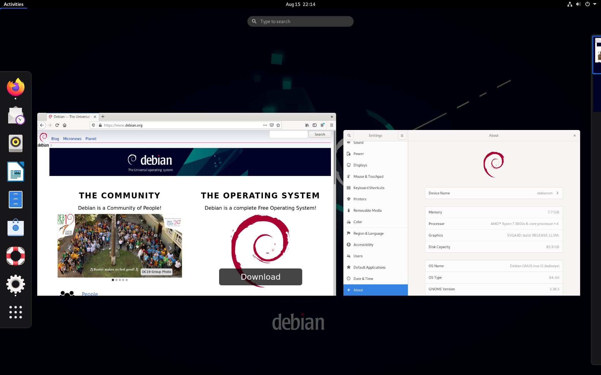

Debian
Debian also known as Debian GNU/Linux, is a GNU/Linux distribution composed of free and open-source software, developed by the community-supported Debian Project, which was established by Ian Murdock on August 16, 1993. The first version of Debian (0.01) was released on September 15, 1993, and its first stable version (1.1) was released on June 17, 1996. The Debian Stable branch is the most popular edition for personal computers and servers. Debian is also the basis for many other distributions, most notably Ubuntu.

Debian 11 (Bullseye) running its default desktop environment, GNOME version 3.38
Debian is one of the oldest operating systems based on the Linux kernel. The project is coordinated over the Internet by a team of volunteers guided by the Debian Project Leader and three foundational documents: the Debian Social Contract, the Debian Constitution, and the Debian Free Software Guidelines. New distributions are updated continually, and the next candidate is released after a time-based freeze.
Since its founding, Debian has been developed openly and distributed freely according to the principles of the GNU Project. Because of this, the Free Software Foundation sponsored the project from November 1994 to November 1995. When the sponsorship ended, the Debian Project formed the nonprofit organization Software in the Public Interest to continue financially supporting development.